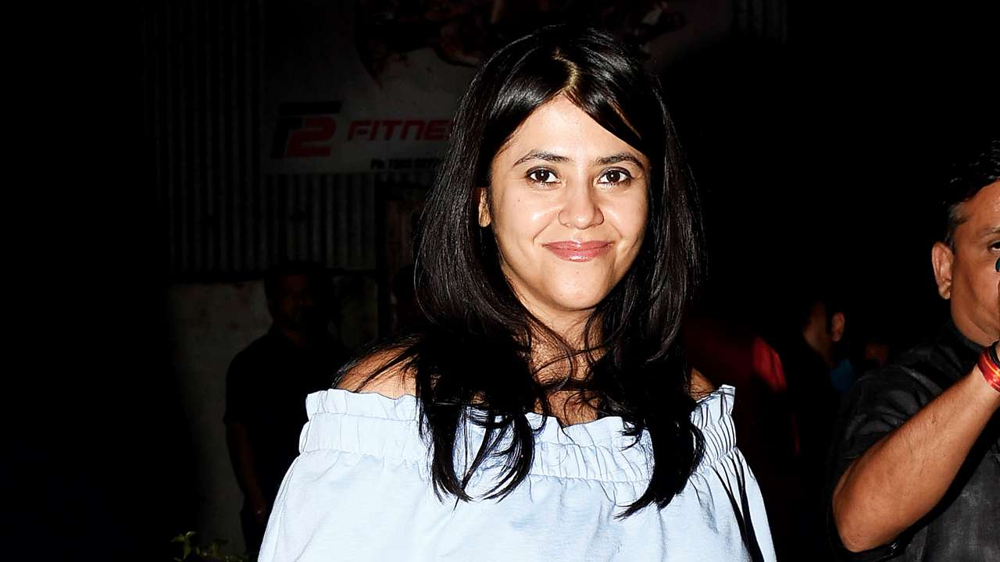

Pavitra Rishta (International title: Sacred Ties) is a 2009 Indian soap opera produced by Ekta Kapoor of Balaji Telefilms, that aired on Zee TV. Its initial concept is an adaptation from south Indian Tamil serial Thirumathi Selvam.
Written by Original Story
S Kumaran
Story and screenplay
R M Joshi, Anil Nagpal,
Gitangshu Dey, Vikas Tiwari,
Nidhi Singh, Neha Shrivastava,
Ved Raj, Shweta Bhardwaj
Dialogues
Shirish Latkar